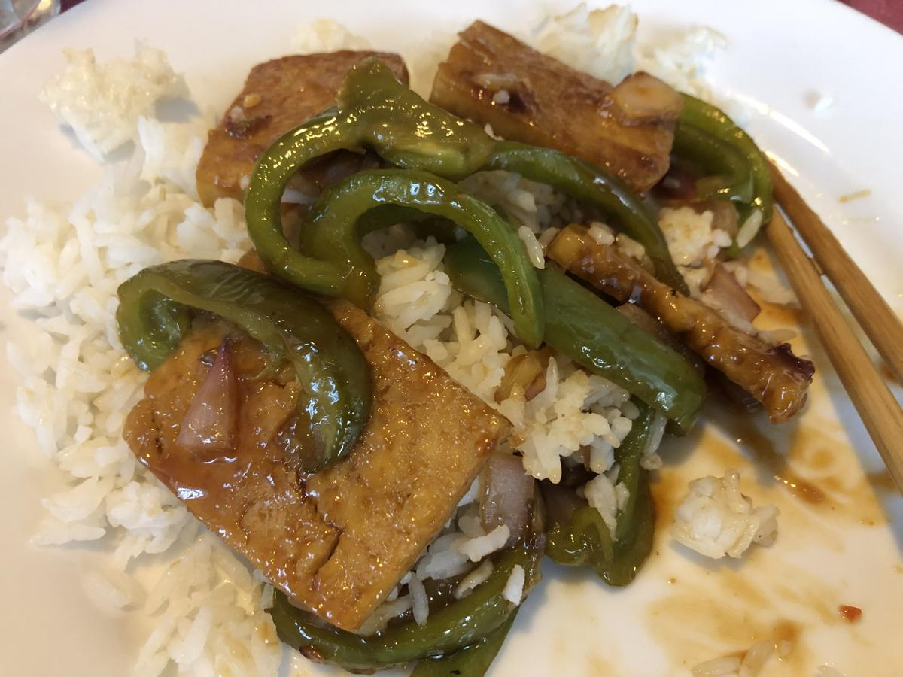

Based on https://cooking.nytimes.com/recipes/1020530-baked-tofu-with-peanut-sauce-and-coconut-lime-rice
Personal rating: 4 / 5

2 Tbsp peanut or vegetable oil, plus more for brushing the pan and drizzling
2/3 cup lime juice (from about 5 limes), and zest of 1 lime
Kosher salt
8 baby bell peppers or 1 medium bell pepper (any color will do), stemmed and thinly sliced lengthwise
Black pepper
1 cup long-grain rice like jasmine or basmati
1/2 cup full-fat coconut milk
1 cup smooth, natural peanut butter
1 Tbsp red miso
1 Tbsp grated ginger
1 Tbsp fish sauce (optional)
2 tsp chopped habanero pepper, stem and seeds removed, or 1 Tbsp sambal
2 Tbsp buckwheat honey or molasses
2 (14-ounce) package extra-firm tofu, drained and sliced crosswise, 1/4-inch thick
3 cups peppery greens, like arugula, mizuna or baby mustard greens
2 scallions, trimmed and thinly sliced